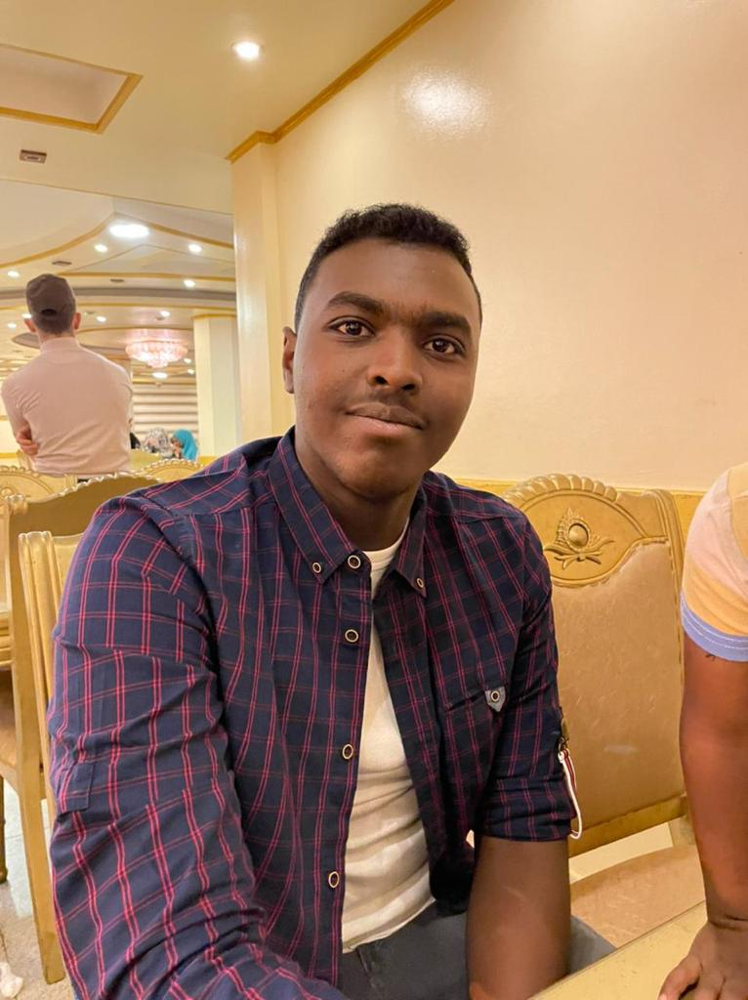

GET TO KNOW ME
About Me

Hello, I'm Abdulrahman.
I'm an Information Technology student at Ontario Tech University with an interest in networking, IT security, and software development.
Through my coursework, I'm developing my understanding of computer networks, programming, and the ways technology can be used to solve practical problems.
I'm working to strengthen my technical skills through assignments and hands-on projects. My goal is to keep learning, gain practical experience, and prepare for a career in IT.
A Short Introduction
Here's a short video where I introduce myself and share some of my interests in information technology.